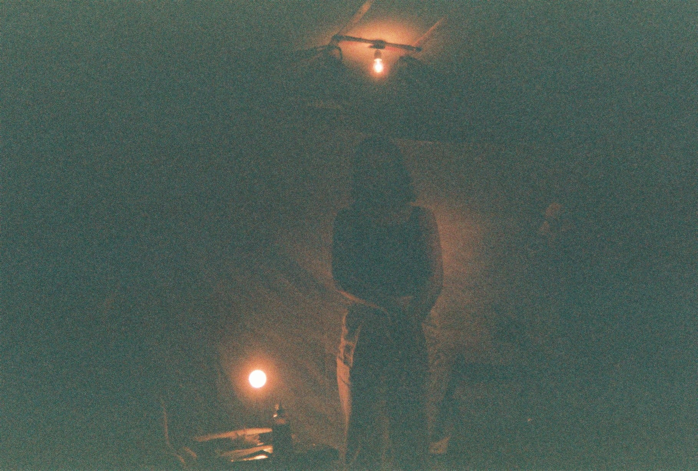
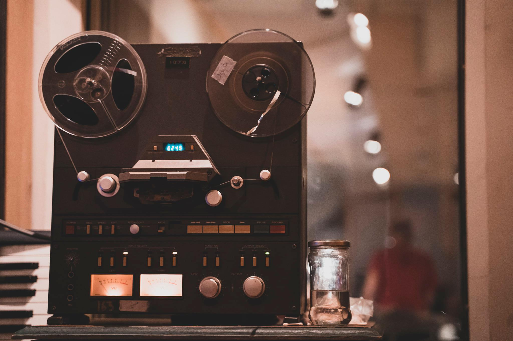

מזקקה
מקום

המזקקה היא הפרוייקט של מיכאל ברקוביץ', במקור נגר אמנותי, וגם עוסק בסאונד ותאורה. ב-2012 ביקר בניו יורק במועדון ההופעות "The Storm" של ג'ון זורן והרגיש שחסר מקום להופעות בירושלים כמוהו: פשוט ועממי ועם זאת בעל תנאים ברמה גבוהה. עד אז היו בירושלים בעיקר שני סוגים של מקומות: אחד מיינסטרימי, מיועד לקהל רחב מאוד, כמו הצוללת הצהובה ותאטרון ירושלים, והשני אלטרנטיבי מאוד כמו הקסטה ואוגנדה, ביתיים וכיפיים אבל עם תנאים מאוד בסיסיים, לא היה סאונד מוקפד ואי אפשר היה לחוות הופעה כמו שצריך. היה חסר מקום ביניים, נעים וביתי ומקדם מוזיקה שלא בהכרח מהמיינסטרים ואפילו מאתגרת – יותר אמנות מבידור, אבל עם שרותים לקהל ותנאים ברמה גבוהה. בסוף ההופעה בדה סטורם החליט שינסה להקים מקום כזה.

החשיבה הייתה שהפרוייקט לא יהיה למטרות רווח ושלא לעשות כסף על חשבון האמנים, אלא לקדם אותם. לכן החליט להיעזר בתקציבים חיצוניים כדי לתמוך בקיומו. האג'נדה של המקום תהיה לקדם ולטפח יצירה מקומית מעניינת ואמנים שלא בהכרח מקבלים את הבמה הראויה, במקום אינטימי ומשפחתי, יחד עם ציוד טוב ומקצועי ולחזון אף התווסף אולפן הקלטות. הוא התייעץ עם חבריו נועם ולידיה מעמותת בר קיימא והם ליוו את הפרוייקט מבחינה הפקתית, כמו גיוס כספים וכדומה. המיקום המקורי שתוכנן היה בעליית הגג של בית הנסן, והוא נכנס למשא ומתן מול הנהלת המתחם, אך בסוף העניין נפל. בחיפוש אחר מקום חלופי ברקוביץ' התביית על רחוב שושן שהיו בו הרבה מבנים היסטוריים ששייכים לכנסיה הארמנית. הם התאימו מבחינת החיפוש אחר מקום שיש לו היסטוריה, שירגש אותו ושיוכל לצקת לתוכו את החלום, והוא ראה שיש שם הרבה חללים נטושים ונעולים. החלל שהוא התעניין בו במיוחד היה שנים רבות מוסך. במשך חודשים הוא ניסה ליצור קשר עם הכנסיה, והלך ודפק על דלתות, אך הם היו חשדנים ולא מיהרו לעזור לו. לבסוף מצא את העו"ד שמייצג אותם והוא קישר ביניהם כדי שהפרוייקט יוכל לקרות.
כשקיבל את המתחם הוא החל לשפץ אותו בעצמו ובנה במשך 4-5 חודשים. כשהתקרב תאריך הפתיחה הבין שצריך גם לנהל את המקום, לגייס צוות כמו סאונד, תאורה, ברמנים, קופאים, ולהתעסק עם פרסום, הפקה והרבה בירוקרטיה. הוא מצא צוות קטן שחלקו התחיל לעבוד בהתנדבות בשנים הראשונות או בשכר סמלי, מתוך אהבה לפרוייקט. כמו כן אנשים מהצוות השתמשו במקום לחזרות. כשנתיים-שלוש המקום היה קטן, כרבע מהגודל הנוכחי שלו, וכלל רק מועדון הופעות עם בר קטנטן. אחרי שלוש שנים ברקוביץ' הרגיש שהוא קורס מעודף עבודה, שכן ניהול המקום דרש ממנו לעבוד כל יום עד שעות מאוחרות ובאינטנסיביות גבוהה, ועדיין המקום לא החזיק את עצמו כלכלית. הוא הבין שהברירות שניצבו בפניו הן לסגור את המקום או להרחיב אותו משמעותית ולייצר לצדו עסק שיכניס כסף. לכן לקח את החללים שליד ובמשך כמה חודשים בנה אולפן הקלטות מאובזר שיוכל להוות ענף הכנסה נוסף, ואת חלל הבר-בית קפה-מסעדה. יעודם היה לתמוך כלכלית בחלק שאינו למטרות רווח – ההופעות. הבר הוקם כישות נפרדת מהעמותה, כעסק לכל דבר. בהמשך למודל החדש המקום הלך וגדל, והתאים להכיל יותר אנשים והפקות.

אולפן ההקלטות
מאז תחילת הדרך המזקקה משתפת פעולה עם מוסדות תרבות רבים בעיר, מבתי הספר לאמנות, הסינמטק, הצוללת הצהובה, הזירה (הצוות הטכני של הזירה החל את דרכו בעבודה והופעות במזקקה). המזקקה נהפכה לעוגן תרבותי בעיר, שקידם ופיתח יוצרים מסוגים שונים שהתחילו את דרכם במזקקה והיום מופיעים במקומות מאוד גדולים, לדוגמה הרכב הג'אז שלוש. היו אירועים וסדרות של אירועים שהיו אבני דרך בהתפתחות המקום, כמו החד לשוני – מסיבה שהיה מארגן רם שפינוזה במשך כמה שנים עם מוזיקאים וראפרים ממזרח ומערב העיר, מוזיקה בעברית וערבית, אלה היו אירועים שמילאו את המקום ביהודים וערבים והיוו מעין אירוע דגל של המזקקה באותן שנים. בנוסף היו סדרות של הופעות שנולדו מתוך המזקקה והמשיכו הלאה, ומסיבות כמו היפנוטיק דיסקוטק שהתחילו במזקקה והיום קורות במקומות אחרים. מדי שנה מתקיים בה פסטיבל הזיקוק במשך שלושה ימים של הופעות ומוזיקה. באולפן מתקיימות הקלטות באופן שוטף, למוזיקאים ולהפקות של סרטים מהארץ ומחו"ל.